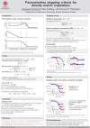
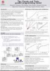

Posters
 I am developing methods and software for electronic structure calculations using linear scaling techniques. I am designing algorithms based on recursive polynomial expansions to compute the one-electron density matrix for a given effective Hamiltonian matrix in for example Hartree-Fock or Kohn-Sham Density functional theory (DFT). DFT is a good compromise between computational complexity and accuracy in many quantum chemistry applications.
Electronic structure calculations
Electronic structure calculations are the one of the most computationally expensive tasks in scientific calculations. The electronic structure is the fundamental concept in many fields of science; it allows computing the probability to find an electron in certain position in space.The purpose of my research projects is design and analysis of numerical methods and their efficient implementation in programs running on desktop and supercomputers.
Projects
Efficient stopping criteria for recursive polynomial expansions
In this project we develop parameterless stopping criteria for recursive polynomial
expansions to construct the density matrix in electronic structure calculations.
Based on convergence order estimation the new stopping criteria automatically
and accurately detect when the calculation is dominated by numerical errors and
continued iteration does not improve the result. Difficulties in selecting a stopping
tolerance and appropriately balancing it in relation to parameters controlling
the numerical accuracy are avoided. Thus, our parameterless stopping criteria
stand in contrast to the standard approach to stop as soon as some error
measure goes below a user-defined parameter or tolerance.
See my publication (J. Chem. Theory Comput. 2016, 12, 12, 5788-5802).
Parallel large scale electronic structure calculations
In this project, linear scaling algorithms are combined with the parallelization framework Chunks and Tasks, which allows for efficient use of computer clusters.